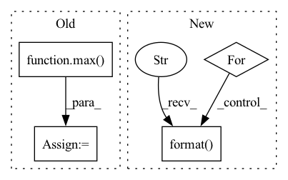

Pattern ID :28338
Before Change
// p4 ─> p4p5 ─> pan_out1
// ↓ ↑
// p3 ─> pan_out2 ───┘
csp_depth = max( round(depth_mul * 2), 1)
p3, p4, p5 = features // p3: [64, 64, 256], p4: [32, 32, 512], p5: [16, 16, 512]
p3 = conv_dw_pw_block(p3, p3.shape[-1] // 2, kernel_size=1, activation=activation, name=name + "p3_down_") // [64, 64, 128]
p4 = conv_dw_pw_block(p4, p4.shape[-1] // 2, kernel_size=1, activation=activation, name=name + "p4_down_") // [32, 32, 256]
// p4p5: [32, 32, 256]
p4p5 = upsample_merge([p4, p5], csp_depth, use_depthwise_conv=use_depthwise_conv, activation=activation, name=name + "p4p5_")
// pan_out2: [64, 64, 128]
pan_out2 = upsample_merge([p3, p4p5], csp_depth, use_depthwise_conv=use_depthwise_conv, activation=activation, name=name + "p3p4p5_")
// pan_out1: [32, 32, 256]
pan_out1 = downsample_merge([pan_out2, p4p5], csp_depth, use_depthwise_conv=use_depthwise_conv, activation=activation, name=name + "c3n3_")
// pan_out0: [16, 16, 512]After Change
upsamples = [features[-1]]
p_name = "p{}_".format(len(features) + 2)
// upsamples: [p5], features[:-1][::-1]: [p4, p3] -> [p5, p4p5, p3p4p5]
for id, ii in enumerate(features[:-1][::-1]):
cur_p_name = "p{}".format( len(features) + 1 - id)
nn = conv_dw_pw_block(ii, ii.shape[-1] // 2, kernel_size=1, activation=activation, name=name + cur_p_name + "_down_")
p_name = cur_p_name + p_name
nn = upsample_merge([nn, upsamples[-1]], fpn_depth, use_depthwise_conv=use_depthwise_conv, activation=activation, name=name + p_name)
upsamples.append(nn)In pattern: SUPERPATTERN
Frequency: 3
Non-data size: 4
Instances Fragment ID: 83662232
Project Name: leondgarse/keras_cv_attention_models
Commit Name: bef44f2c07106cb7cf251facb6581ef6220cde48
Time: 2022-03-18
Author: leondgarse@gmail.com
File Name: keras_cv_attention_models/yolor/yolor.py
M Class Name: AnonimousClass
N Class Name: AnonimousClass
M Method Name: path_aggregation_fpn(5)
N Method Name: path_aggregation_fpn(5)
M Parent Class:
N Parent Class:
M File Name: keras_cv_attention_models/yolor/yolor.py
N File Name: keras_cv_attention_models/yolor/yolor.py
M Start Line: 139
M End Line: 152
N Start Line: 204
N End Line: 220
Before Change
// p4 ─> p4p5 ─> pan_out1
// ↓ ↑
// p3 ─> pan_out2 ───┘
csp_depth = max( round(depth_mul * 2), 1)
p3, p4, p5 = features // p3: [64, 64, 256], p4: [32, 32, 512], p5: [16, 16, 512]
p3 = conv_dw_pw_block(p3, p3.shape[-1] // 2, kernel_size=1, activation=activation, name=name + "p3_down_") // [64, 64, 128]
p4 = conv_dw_pw_block(p4, p4.shape[-1] // 2, kernel_size=1, activation=activation, name=name + "p4_down_") // [32, 32, 256]
// p4p5: [32, 32, 256]
p4p5 = upsample_merge([p4, p5], csp_depth, use_depthwise_conv=use_depthwise_conv, activation=activation, name=name + "p4p5_")
// pan_out2: [64, 64, 128]
pan_out2 = upsample_merge([p3, p4p5], csp_depth, use_depthwise_conv=use_depthwise_conv, activation=activation, name=name + "p3p4p5_")
// pan_out1: [32, 32, 256]After Change
downsamples = [upsamples[-1]]
// downsamples: [p3p4p5], upsamples[:-1][::-1]: [p4p5, p5] -> [p5, p4p5, p3p4p5]
for id, ii in enumerate(upsamples[:-1][::-1]):
cur_name = name + "c3n{}_".format( id + 3)
nn = downsample_merge([downsamples[-1], ii], fpn_depth, use_depthwise_conv=use_depthwise_conv, activation=activation, name=cur_name)
downsamples.append(nn)
return downsamples
Fragment ID: 83662228
Project Name: leondgarse/keras_cv_attention_models
Commit Name: bef44f2c07106cb7cf251facb6581ef6220cde48
Time: 2022-03-18
Author: leondgarse@gmail.com
File Name: keras_cv_attention_models/yolor/yolor.py
M Class Name: AnonimousClass
N Class Name: AnonimousClass
M Method Name: path_aggregation_fpn(5)
N Method Name: path_aggregation_fpn(5)
M Parent Class:
N Parent Class:
M File Name: keras_cv_attention_models/yolor/yolor.py
N File Name: keras_cv_attention_models/yolor/yolor.py
M Start Line: 139
M End Line: 152
N Start Line: 204
N End Line: 220
Before Change
scores_matrix = pad_sequence(scores_list, batch_first=True, padding_value=-np.inf) // nusers x items
// get topk
_, topk_index = torch.topk(scores_matrix, max( self.topk) , dim=-1) // nusers x k
return topk_index
After Change
// get metrics
metric_dict = {}
result_list = self._calculate_metrics(pos_len_list, topk_index)
for metric, value in zip(self.metrics, result_list):
for k in self.topk:
key = "{}@{}".format( metric, k)
metric_dict[key] = round(value[k - 1], 4)
return metric_dict
def _check_args(self): Fragment ID: 83662224
Project Name: rucaibox/recbole
Commit Name: df66b6285fec567d1f3ca0d6ee9d9ceb71f792b6
Time: 2020-10-20
Author: 1337990880@qq.com
File Name: recbole/evaluator/topk_evaluator.py
M Class Name: TopKEvaluator
N Class Name: TopKEvaluator
M Method Name: evaluate(3)
N Method Name: evaluate(4)
M Parent Class: AbstractEvaluator
N Parent Class: AbstractEvaluator
M File Name: recbole/evaluator/topk_evaluator.py
N File Name: recbole/evaluator/topk_evaluator.py
M Start Line: 38
M End Line: 57
N Start Line: 69
N End Line: 80
Before Change
// remember best acc@1 and save checkpoint
is_best = acc1 > best_acc1
best_acc1 = max( acc1, best_acc1)
if args.local_rank == 0:
save_checkpoint(
{After Change
// 设置 train_scheduler 来调整学习率
train_scheduler.step(epoch)
for step , (images, labels) in enumerate(train_loader):
// 将对应进程的数据放到对应 GPU 上
images = images.cuda(local_rank, non_blocking=True)
labels = labels.cuda(local_rank, non_blocking=True)
outputs = model(images)
loss = criterion(outputs, labels)
// torch.distributed.barrier()的作用是，阻塞进程，保证每个进程运行完这一行代码之前的所有代码，才能继续执行，这样才计算平均loss和平均acc的时候不会出现因为进程执行速度不一致的错误
torch.distributed.barrier()
reduced_loss = reduce_mean(loss, args.nprocs)
// 更新优化模型权重
optimizer.zero_grad()
loss.backward()
optimizer.step()
if args.local_rank == 0:
print(
"Training Epoch: {epoch} [{trained_samples}/{total_samples}]\tLoss: {:0.4f}\tLR: {:0.6f}".format(
reduced_loss,
optimizer.param_groups[0]["lr"],
epoch=epoch,
trained_samples=step * args.batch_size + len(images),
total_samples=len(train_loader.dataset)
) )
// validate after every epoch
validate(test_loader, model, criterion, local_rank, args)
Fragment ID: 83662225
Project Name: rentainhe/pytorch-distributed-training
Commit Name: 924a65892510a4cf1352ee408d6186344043f3a4
Time: 2021-01-05
Author: 596106517@qq.com
File Name: distributed.py
M Class Name: AnonimousClass
N Class Name: AnonimousClass
M Method Name: main_worker(3)
N Method Name: main_worker(3)
M Parent Class:
N Parent Class:
M File Name: distributed.py
N File Name: distributed.py
M Start Line: 60
M End Line: 111
N Start Line: 41
N End Line: 110